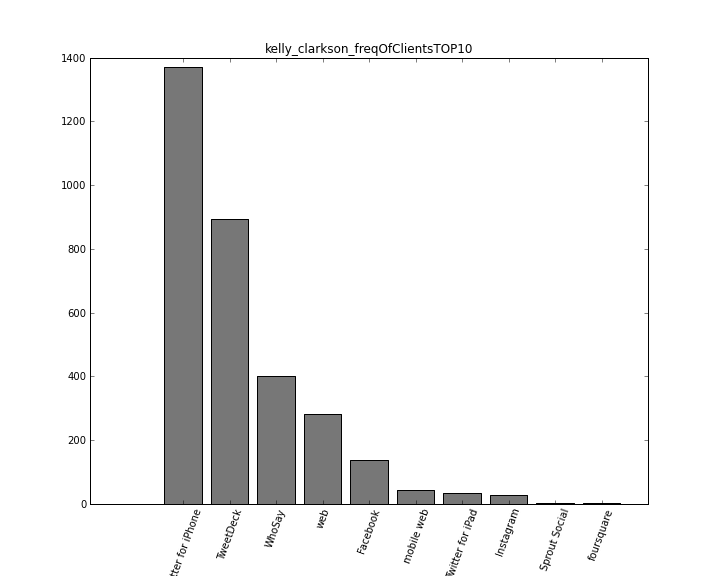
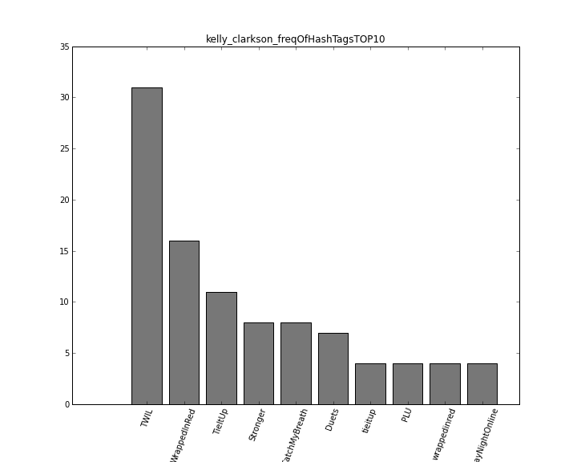
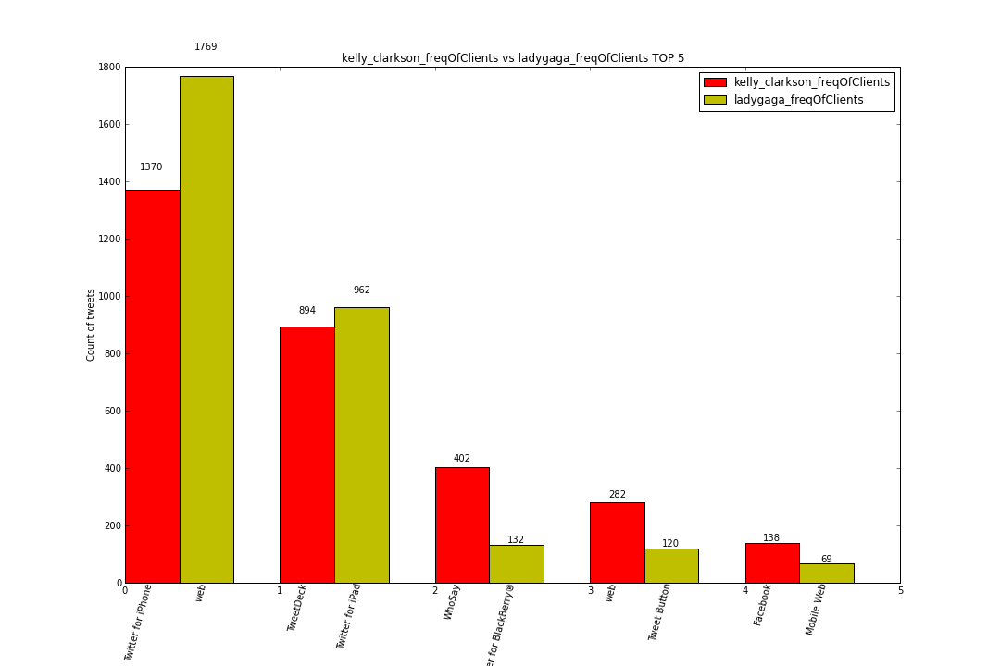

should i put all pics unter /image folder hier? I dont think so. :) If you want more, please go to larrybird package’s folder, hier lives this *image* folder. It concludes all pics, too many!!
After the user inputs “kelly_clarkson” to the main.start(), this programm usese mathplotplot to create images.
 We also have a function in makePicture.py module to create comparison diagramm for two twitters. Hier ist one of them for Lady Gaga and Kelly Clarkson’s Clients Comparision
